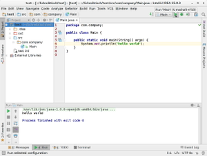

Intellij IDEA
Dieser Artikel wurde für die folgenden Ubuntu-Versionen getestet:
Ubuntu 16.04 Xenial Xerus
Zum Verständnis dieses Artikels sind folgende Seiten hilfreich:
Intellij IDEA  ist eine plattformübergreifende integrierte Entwicklungsumgebung (IDE) für Java, Kotlin, Groovy und Scala des tschechischen Unternehmens Jetbrains. Neben einer kostenpflichtigen und proprietären Ultimate-Edition gibt es auch eine Community-Edition, die unter einer Open-Source-Lizenz verfügbar ist.
ist eine plattformübergreifende integrierte Entwicklungsumgebung (IDE) für Java, Kotlin, Groovy und Scala des tschechischen Unternehmens Jetbrains. Neben einer kostenpflichtigen und proprietären Ultimate-Edition gibt es auch eine Community-Edition, die unter einer Open-Source-Lizenz verfügbar ist.
Die IDE kann durch zahlreiche Plugins erweitert werden. Bekannter als die Entwicklungsumgebung selbst ist ihr Derivat Android Studio, eine um Funktionen für die Android-Entwicklung erweiterte Variante.
Funktionsumfang¶
Intellij IDEA bietet einige, teils sehr fortschrittliche Funktionen wie Syntax-Highlighting, Code-Vervollständigung oder Refactoring, um das Programmieren produktiver zu gestalten.
| Vergleich der Funktionen | ||
| Funktion | Community-Edition | Ultimate-Edition |
| Java, Kotlin, Groovy, Scala | ✔ | ✔ |
| Android | ✔ | ✔ |
| Maven, Gradle, SBT | ✔ | ✔ |
| Git, SVN, Mercurial, CVS | ✔ | ✔ |
| Perforce, ClearCase, TFS | ✔ | |
| JavaScript, TypeScript | ✔ | |
| Java EE, Spring, GWT, Vaadin, Play, Grails, andere Frameworks | ✔ | |
| Datenbanktools, SQL | ✔ | |
Im Folgenden wird nur auf die Community-Edition von Intellij IDEA eingegangen.
Voraussetzungen¶
Um die Entwicklungsumgebung vollständig nutzen zu können, muss eine Java-Entwicklungsumgebung (JDK) inkl. einer Laufzeitumgebung (JRE) in der Version 6 oder neuer installiert sein. Weiterführende Informationen dazu findet man im Artikel Java/Installation.
Im Rahmen des Artikels wurde OpenJDK erfolgreich getestet.
Installation¶
Intellij IDEA ist weder über die offiziellen Paketquellen noch über Paketquellen des Herstellers zu beziehen. Allerdings gibt es ein "Personal Packages Archiv" (PPA) [1] der Community, das aber noch manuell eingebunden werden muss.
PPA¶
Adresszeile zum Hinzufügen des PPAs:
ppa:mmk2410/intellij-idea
Hinweis!
Zusätzliche Fremdquellen können das System gefährden.
Ein PPA unterstützt nicht zwangsläufig alle Ubuntu-Versionen. Weitere Informationen sind der  PPA-Beschreibung des Eigentümers/Teams mmk2410 zu entnehmen.
PPA-Beschreibung des Eigentümers/Teams mmk2410 zu entnehmen.
Damit Pakete aus dem PPA genutzt werden können, müssen die Paketquellen neu eingelesen werden.
Anschließend kann das folgende Paket installiert werden [2]:
intellij-idea-community (ppa)
 mit apturl
mit apturl
Paketliste zum Kopieren:
sudo apt-get install intellij-idea-community
sudo aptitude install intellij-idea-community
Manuell¶
Möchte man die Entwicklungsumgebung manuell systemweit installieren, lädt man sich das Programm von der Herstellerseite  herunter (ca. 300 MiB). Danach entpackt [3] man das Archiv mit Root-Rechten [4] nach /opt.
herunter (ca. 300 MiB). Danach entpackt [3] man das Archiv mit Root-Rechten [4] nach /opt.
Hinweis!
Fremdsoftware kann das System gefährden.
Um die Entwicklungsumgebung zum ersten Mal zu starten, führt man das Skript idea.sh im Unterverzeichnis bin/ der Installation aus [5]:
/opt/intellij-idea-community/bin/idea.sh
Der absolute Pfad kann sich je nach Version und Installationsart unterscheiden.
Nun folgt man den Anweisungen des grafischen Konfigurationsprogramms. U.a. kann hier auch ein Programmstarter auf dem Desktop angelegt werden.
Nutzung¶
|  |
| Intellij IDEA unter GNOME |
Die Nutzung der IDE unterscheidet sich im wesentlichen nicht von der anderer Entwicklungsumgebungen wie Eclipse oder Qt Creator. Das Fenster ist in zwei Spalten geteilt. Die linke Spalte dient zur Übersicht und zeigt die Projektstruktur an. Wahlweise kann die Ansicht angepasst werden, um z.B. nur Dateien zu zeigen, die fehlerhaften Code enthalten. In der rechten Spalte befindet sich der Editor, der auch mehrere Dateien in Tabs öffnen kann. Der Editor ist dabei allerdings nicht nur auf Quellcode-Dateien beschränkt und kann eine Vielzahl von Formaten anzeigen, sogar Grafiken.
Am oberen Rand befindet sich eine Leiste mit den Menüs, darunter eine zweite, die links den Pfad zur gegenwärtig geöffneten Datei anzeigt. Rechts befinden sich die Schaltflächen zum Ausführen und Debuggen des Programms.
Eine dritte Leiste befindet sich am unteren Rand. Von dort aus lassen sich projektabhängig weitere Fenster öffnen, darunter z.B. ein Terminal, eine TODO-Liste und die Ausgabe des Programms. Ist das Projekt in einem Versionskontrollsystem registriert, so lässt sich dort auch der Dateiverlauf anzeigen.
 Übersichtsartikel
Übersichtsartikel- Erstellt mit Inyoka
-
 2004 – 2017 ubuntuusers.de • Einige Rechte vorbehalten
2004 – 2017 ubuntuusers.de • Einige Rechte vorbehalten
Lizenz • Kontakt • Datenschutz • Impressum • Serverstatus -
Serverhousing gespendet von